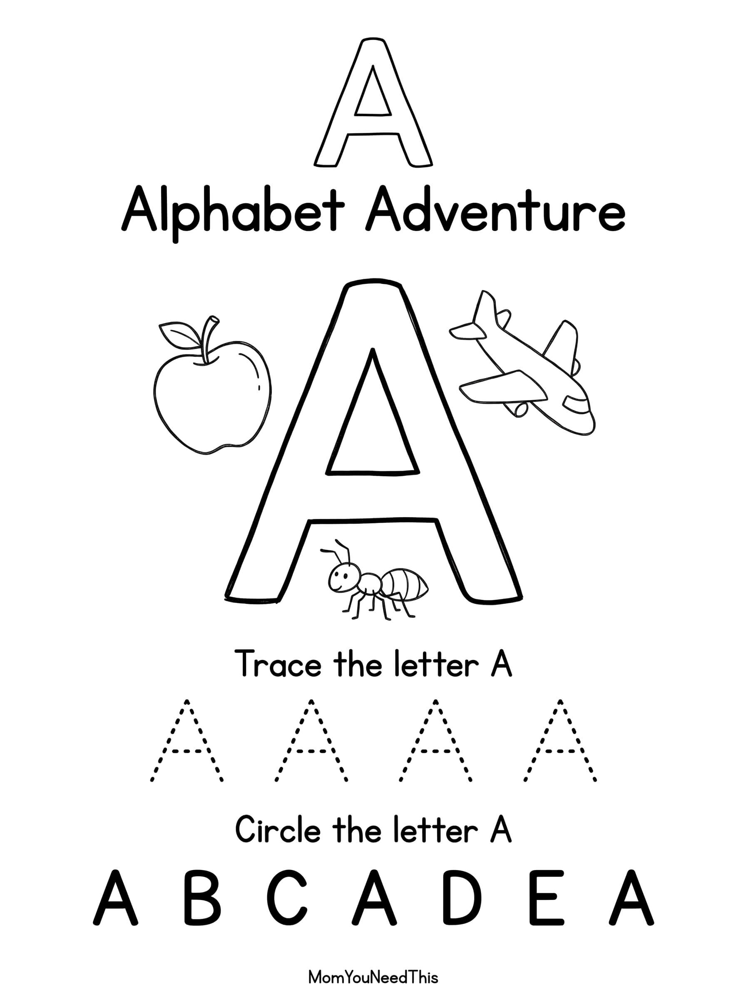

Free Letter A Coloring Page A is for Apple 🍎
Make learning the alphabet fun with a Letter A coloring page designed for toddlers and preschoolers. Color the letter, discover the sound, and enjoy a simple creative activity.

🎨 Download Your Letter A Coloring Page
A fun coloring activity to help your child become familiar with the letter A while encouraging creativity and early alphabet skills.
⬇️ Download Free Coloring Page
🎁 Free printable for toddlers & preschoolers
What Your Child Practices
📚 Continue The Alphabet Adventure
Discover more free alphabet coloring pages and activities for your little learner.
⭐ Explore All LettersMore Free Toddler Resources
Discover potty training tools, learning activities, coloring pages, and more free resources to make learning fun.
🎁 View Free Resources🖨️ How to Use This Printable
Get started in minutes — everything here is free and made for busy parents.
- Download the printable. Tap the download button to save the free Letter A Coloring Pages file to your device.
- Print it out. Use any home printer and regular paper — cardstock works great for pages little hands will use again and again.
- Learn together. Sit with your child, follow the activity, and keep it playful. Short sessions work best.
- Explore more. Check the free printables linked below for your next activity.
❓ Letter A Coloring Pages FAQs
Is this Letter A Coloring Pages printable free?
Yes — every printable on MomYouNeedThis is 100% free to download and print. No signup, no payment, just tap the download button.
How do I use this alphabet printable?
Print the page and work through it together: name the letter, make its sound, and complete the activity. Short, playful sessions work better than long lessons for little learners.
What literacy skills does this practice?
Letter recognition, beginning sounds, and print awareness — the core pre-reading skills that prepare children for phonics and reading.
🔗 More Free Printables You’ll Love
Pair this printable with more free learning activities from the MomYouNeedThis library.
- 🔤 Alphabet Coloring PagesFree A to Z alphabet coloring printables for toddlers and preschoolers.
- 🎏 Free Alphabet Tracing PagesFree alphabet tracing pages printable for toddlers and preschoolers.
- 🎏 Free Beginning Sounds PagesFree beginning sounds pages printable for toddlers and preschoolers.
- 🎏 Free Dot Marker Alphabet WorksheetsFree dot marker alphabet worksheets printable for toddlers and preschoolers.